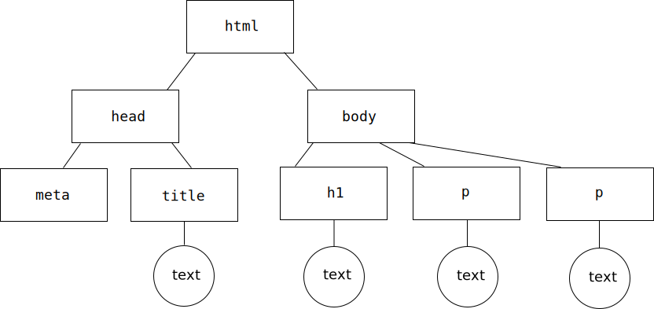
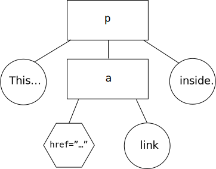

What is the Document Object Model (DOM)
- a representation of the structure, details of a web page
- each element represents a node
- each element includes properties
- an example of an application programming interface (API)
- how we interact with and modify a web page
Examining the DOM
In Firefox: Tools → Web Developer → Toggle Tools. Select Inspector.
- hover over code to see how the browser rendered an HTML element
- use the element inspector icon () to see the code
- clicking an element shows the DOM path in the status bar
- the "Rules" panel shows which CSS properties apply to the element
Nodes
There are four types of nodes which make up the DOM:
- document
- element
- attribute
- text
These have unique properties which can be used to interact with.
Establishing Relationships
Elements can have:
- ancestors
- a parent (only one)
- children
- siblings
The DOM Tree
html
- has no parents
headandbodyare its childrenheadis its first childbodyis its last child
head
bodyis its siblingmetais its first childcharsetis an attribute node
titleis its last child- the text node (or content) is "My Web Site"
body
headis its sibling- has three children
h1is its first childp(the first) is a childp(the second) is the last child
h1
- is siblings with (both)
p - has one text node: "Hello!"
p
The first p:
- is siblings with
h1and (the second)p - has one text node: "Welcome to my web site."
The second p:
- is siblings with
h1and (the first)p - has one text node: "Thank you for visiting."
Nodes
<p>This has a <a href="...">link</a> inside.</p>
Examining DOM Nodes
In the Web Developer Tools panel, select Console.
console.log displays data about a given node.
console.log(document);
console.log(document.head);
console.log(document.body);
We'll see more use of this when we learn JavaScript.